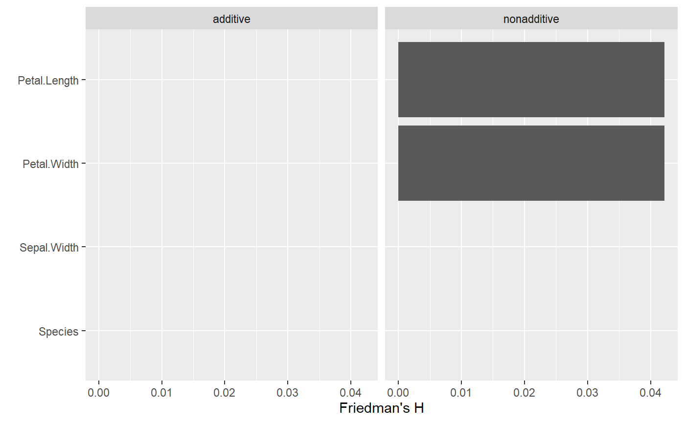
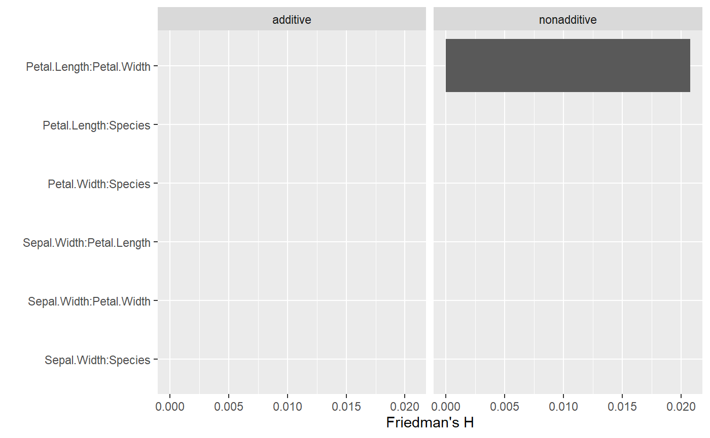

This function provides Friedman's H statistic for overall interaction strength per covariable as well as its version for pairwise interactions, see reference below. As a fast alterantive to assess overall interaction strength, with type = "ice", the function offers a method based on centered ICE curves: The corresponding H* statistic measures how much of the variability of a c-ICE curve is unexplained by the main effect. As for Friedman's H statistic, it can be useful to consider unnormalized or squared values (see Details below).
light_interaction(x, ...) # S3 method for default light_interaction(x, ...) # S3 method for flashlight light_interaction( x, data = x$data, by = x$by, v = NULL, pairwise = FALSE, type = c("H", "ice"), normalize = TRUE, take_sqrt = TRUE, grid_size = 100, n_max = 500, seed = NULL, use_linkinv = FALSE, value_name = "value", error_name = "error", label_name = "label", variable_name = "variable", type_name = "type", ... ) # S3 method for multiflashlight light_interaction(x, ...)
| x | An object of class |
|---|---|
| ... | Further arguments passed to or from other methods. |
| data | An optional |
| by | An optional vector of column names used to additionally group the results. |
| v | Vector of variables to be assessed. |
| pairwise | Should overall interaction strength per variable be shown or pairwise interactions? Defaults to |
| type | Are measures based on Friedman's H statistic ("H") or on "ice" curves? Option "ice" is available only if |
| normalize | Should the variances explained be normalized? Default is |
| take_sqrt | In order to reproduce Friedman's H statistic, resulting values are root transformed. Set to |
| grid_size | Grid size used to form the outer product. Will be randomly picked from data (after limiting to |
| n_max | Maximum number of data rows to consider. Will be randomly picked from |
| seed | An integer random seed used for subsampling. |
| use_linkinv | Should retransformation function be applied? Default is FALSE. |
| value_name | Column name in resulting |
| error_name | Currently not used. |
| label_name | Column name in resulting |
| variable_name | Column name in resulting |
| type_name | Column name in the resulting |
An object of class light_importance, light (and a list) with the following elements.
data A tibble containing the results. Can be used to build fully customized visualizations. Its column names are specified by the items in this list (except for "method").
by Same as input by.
type Same as input type. For information only.
value_name Same as input value_name.
error_name Same as input error_name.
label_name Same as input label_name.
variable_name Same as input variable_name.
type_name Same as input type_name.
Friedman's H statistic relates the interaction strength of a variable (pair) to the total effect strength of that variable (pair) based on partial dependence curves. Due to this normalization step, even variables with low importance can have high values for H. The function light_interaction offers the option to skip this normalization step in order to have a more direct comparison of the interaction effects across variable (pairs). The values of such unnormalized H are on the scale of the response variable. Use take_sqrt = FALSE to return squared values of H. Note that in general, for each variable (pair) predictions are done on a data set with grid_size * n_max, so be cautious with increasing the defaults too much. Still, even with larger grid_size and n_max, there might be considerable variation across different runs, thus setting a seed might be required for reproducibility. The minimum required elements in the (multi-) flashlight are a "predict_function", "model", and "data".
default: Default method not implemented yet.
flashlight: Interaction strengths for a flashlight object.
multiflashlight: for a multiflashlight object.
Friedman, J. H. and Popescu, B. E. (2008). “Predictive learning via rule ensembles.” The Annals of Applied Statistics. JSTOR, 916–54.
fit_additive <- lm(Sepal.Length ~ Petal.Length + Petal.Width + Species, data = iris) fit_nonadditive <- lm(Sepal.Length ~ Petal.Length * Petal.Width + Species, data = iris) fl_additive <- flashlight(model = fit_additive, label = "additive") fl_nonadditive <- flashlight(model = fit_nonadditive, label = "nonadditive") fls <- multiflashlight(list(fl_additive, fl_nonadditive), data = iris, y = "Sepal.Length") x <- fls$nonadditive plot(st <- light_interaction(fls))